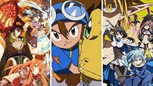

top
end 
Quatro Estaçoes
As estações do ano nos cercam, nos só temos que desacelerar, parar e apreciar o que elas tem de bom a nos ensinar e recordar...
Quantos amores de verão... Quantos momentos de introspecção e reflexão embrulhada em cobertas com uma bebida quente e um livro em mãos...
Quantos cafés reuniram amigos, familiares e amores também, admirando a beleza na primavera...
Quantos momentos de nostalgia sentados em uma praça, apreciando o balançar das folhas caindo das copas das árvores, os pássaros comendo migalhas, um café quentinho, um pacote de pinhão saindo do fogo...
Nos somos parte da natureza, estamos sempre em volta dela, mas somos humanos, apressados, sempre sem tempo, para apreciar a graciosidade das estações.
Mas ainda existem aqueles que admiram, que silenciados, aprendem a dançar o ritmo da vida, a cada vem e vai das estações.
E esses, entendem cada sensação citada nesse livro.
Cada conto nesse livro, narra uma história que vai te inspirar, emocionar e fazer entender a beleza por trás das estações.
E que as diferenças por nas pessoas as tornam únicas.
Vamp o Inicio
Mortes horripilantes, assassinatos sem explicação e quase sempre era uma vítima masculina. Filipha é uma vamp sem modéstia. Em busca de diversão, a vampira vive sua imortalidade da melhor forma possível, mas o fato de beber sangue é uma das suas peculiaridades mais irrelevantes. Insana e com alma de justiça, ela vinga as mulheres sem pudor. As mortes são deixadas para trás, deixando uma detetive empenhada em descobrir quem é a pessoa por trás das barbáries. E em busca de vingar a morte de seu irmão, uma das vítimas. Mas até aonde uma pessoa excepcionalmente comum consegue ir pela justiça ? Duas mulheres: uma vamp e uma Sepht estão de lados opostos defendendo o que acreditam ser importante.
A tragica historia por tras das borboletas
Quando tudo parece uma ruína em lágrimas e solidão, a vida lhe presenteia amigos, amor e aventuras misteriosas. Contudo, as dificuldades prevalecem e agora mais do que nunca, Catheléia precisa de seus amigos para superar mais uma perda e aguentar as revelações do seu passado sombrio...Quando tudo parece uma ruína em lágrimas e solidão, a vida lhe presenteia amigos, amor e aventuras misteriosas. Contudo, as dificuldades prevalecem e agora mais do que nunca, Catheléia precisa de seus amigos para superar mais uma perda e aguentar as revelações do seu passado sombrio...Quando tudo parece uma ruína em lágrimas e solidão, a vida lhe presenteia amigos, amor e aventuras misteriosas. Contudo, as dificuldades prevalecem e agora mais do que nunca, Catheléia precisa de seus amigos para superar mais uma perda e aguentar as revelações do seu passado sombrio...Quando tudo parece uma ruína em lágrimas e solidão, a vida lhe presenteia amigos, amor e aventuras misteriosas. Contudo, as dificuldades prevalecem e agora mais do que nunca, Catheléia precisa de seus amigos para superar mais uma perda e aguentar as revelações do seu passado sombrio...
A Prisioneira Do Metamorfo
O Metamorfo é uma criatura monstruosa que assassina o marido de uma humana. Fingindo se passar pelo marido por um tempo, a criatura se envolve fisicamente com a sua presa, a ponto de possuir sentimentos. Contudo, sua monstruosidade não está esquecida, apenas mascarada. Mas até quando ele conseguirá segurar seus impulsos ? Sequestrada, Kelly lida com um ser sombrio e sem escrúpulos. Entre viver ou morrer, ela terá que escolher um lado. Entre ser a vítima ou a predadora? Criado por Ronald